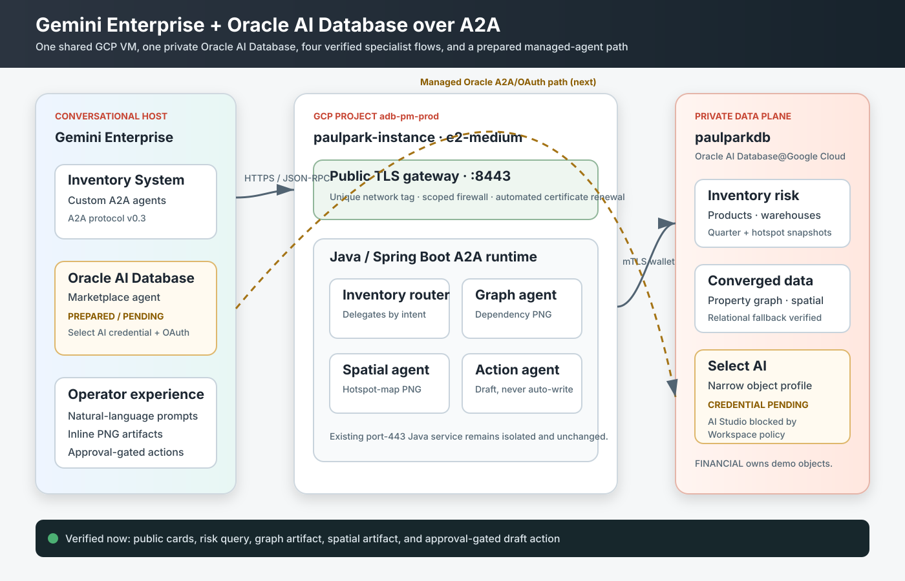
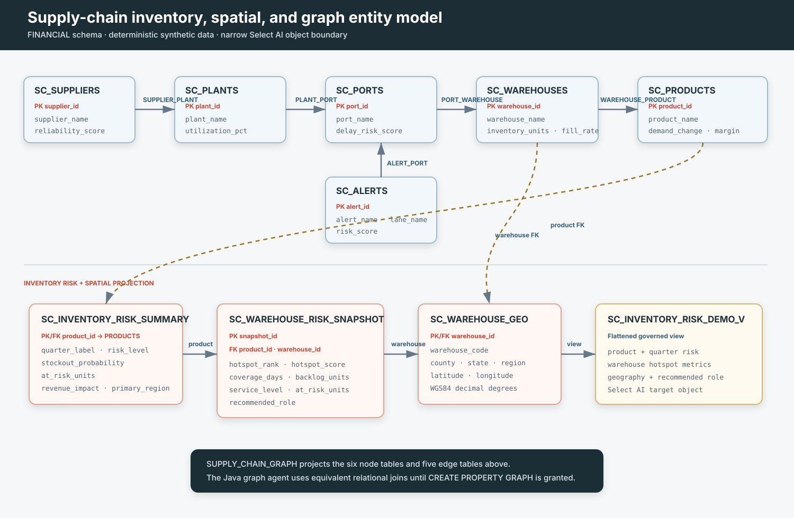

Agent2Agent protocol
A2A lets a host discover an agent through an agent card and exchange typed messages, structured data, and artifacts. It is useful when agents are independently deployed and should remain portable across orchestration products.
Oracle AI Database · Gemini Enterprise · A2A · Select AI
Use one database for relational, graph, spatial, and AI-assisted analysis, then expose focused agents to Gemini Enterprise through the Agent2Agent protocol.
By Paul Parkinson · Updated August 2026
A useful enterprise agent does more than answer a prompt. It must locate trusted data, apply domain logic, explain its evidence, and keep consequential actions under human control. This reference implementation demonstrates that pattern with a synthetic supply-chain scenario.
Oracle AI Database remains the system of record. A small Java service exposes several task-oriented A2A agents, while Gemini Enterprise provides discovery, conversation, and orchestration. The language model can reason over results, but it does not become the data store or bypass database authorization.
The source, schema scripts, agent cards, and deployment templates are available in the project directory. All names and values in the demo data are synthetic.

A2A lets a host discover an agent through an agent card and exchange typed messages, structured data, and artifacts. It is useful when agents are independently deployed and should remain portable across orchestration products.
Gemini Enterprise supplies the user experience, agent catalog, access assignment, and orchestration. A custom A2A agent remains responsible for its own domain behavior and backend authorization.
One database supports ordinary SQL, SQL property graphs, spatial data, vector capabilities, and Select AI. The application can combine these models without maintaining separate copies in specialist databases.
Select AI translates natural-language questions into SQL using an allowlisted set of database objects. Credentials and profiles are database objects, so model access and data scope remain centrally governed.
Key design principle: the protocol transports requests and results; it does not grant database privileges. Normal Oracle users, roles, object grants, network ACLs, and narrowly scoped AI profiles still define what can happen.
The demo uses four questions to show how specialist agents can share a governed data foundation:
The final step deliberately produces a recommendation rather than an automatic write. The proposed transfer includes its supporting evidence and an explicit approval state. This makes the demo useful for discussing human-in-the-loop design instead of presenting autonomy as an all-or-nothing choice.
| Agent | Responsibility | Typical output |
|---|---|---|
| Inventory router | Classify intent and delegate to the appropriate specialist. | Text and structured routing context |
| Risk specialist | Query product, inventory, demand, and regional risk summaries. | Ranked risks with evidence |
| Graph specialist | Traverse supplier, plant, port, warehouse, and product relationships. | Dependency path and diagram |
| Spatial specialist | Combine warehouse coordinates with product-level risk snapshots. | Hotspot explanation and map |
| Action coordinator | Combine evidence into an approval-gated transfer proposal. | Draft action; never an implicit write |
Each public agent publishes a card at a conventional discovery path such as:
https://<agent-host>/<agent-name>/.well-known/agent-card.jsonA minimal request uses JSON-RPC and an A2A message:
{
"jsonrpc": "2.0",
"method": "message/send",
"params": {
"message": {
"kind": "message",
"messageId": "demo-request-001",
"role": "user",
"parts": [{
"kind": "text",
"text": "Which products have the greatest stockout risk?"
}]
}
},
"id": 1
}Agent cards declare supported input and output modes. Graph and spatial specialists can advertise image output so the host can render deterministic database-backed artifacts alongside the explanation.
The schema separates business entities, relationships, locations, and time-based risk measurements. Oracle can then project the same governed tables into the model best suited to each question.

CREATE PROPERTY GRAPH supply_chain_graph
VERTEX TABLES (
suppliers KEY (supplier_id),
plants KEY (plant_id),
ports KEY (port_id),
warehouses KEY (warehouse_id),
products KEY (product_id)
)
EDGE TABLES (
supplier_plant,
plant_port,
port_warehouse,
warehouse_product
);The production DDL names source and destination keys explicitly. The abbreviated example emphasizes the pattern: graph analysis is a governed projection over existing tables, not an untracked copy of operational data.
Select AI connects a model provider to database metadata. The profile should include only the views and tables required for its job. Provider credentials are stored through Oracle credential APIs and must never appear in committed SQL or client-side code.
BEGIN
DBMS_CLOUD_AI.CREATE_PROFILE(
profile_name => 'SUPPLY_CHAIN_PROFILE',
attributes => JSON_OBJECT(
'provider' VALUE '<supported-provider>',
'credential_name' VALUE 'MODEL_PROVIDER_CREDENTIAL',
'model' VALUE '<approved-model>',
'object_list' VALUE JSON_ARRAY(
JSON_OBJECT('owner' VALUE 'APP_SCHEMA', 'name' VALUE 'PRODUCTS'),
JSON_OBJECT('owner' VALUE 'APP_SCHEMA', 'name' VALUE 'WAREHOUSES'),
JSON_OBJECT('owner' VALUE 'APP_SCHEMA', 'name' VALUE 'INVENTORY_RISK_VIEW')
)
)
);
END;
/The application schema owns the AI credential and profile. A database administrator performs only the prerequisites: package grants and a network ACL for the selected provider endpoint. This separation keeps daily agent execution away from the administrator account.
Provider portability: the A2A surface does not need to change when the Select AI provider changes. Create a separate profile for each approved provider, test generated SQL, and select the desired profile through protected runtime configuration.
In the verified OpenAI path, the database-owned profile generated SQL against the allowlisted supply-chain objects, and the public A2A agent reported executionMode=select-ai with DBMS_CLOUD_AI.GENERATE as its source. The application VM did not retain a direct OpenAI API key; model credentials remained inside Oracle AI Database.
One Oracle AI Database 26ai detail is worth capturing for repeatable automation: the public DBMS_CLOUD synonym can target a patch-versioned package object. The setup therefore discovers the synonym target before granting EXECUTE, instead of hard-coding a package suffix that will change with database updates.
The two integration styles complement each other:
The managed agent is the intended primary inventory-analysis entry point when its cross-cloud private-network allowlist is complete. The ORACLE_AI_DATABASE_AGENT team is installed in the application schema and bound to the same narrow supply-chain Select AI profile used for the verified SQL path. Its database-native tools perform SQL generation and execution, distinct-value checks, range checks, and chart generation. The custom Select AI A2A agent provides an explicitly labeled fallback and comparison without changing the graph, spatial, action, or UI specialists.
The managed path requires the database A2A capability, Oracle OAuth, the Oracle Marketplace integration, and assigned users. Each user authorizes with an Oracle database identity, so Oracle Database privileges and policies remain the data-access boundary; Gemini Enterprise does not inherit unrestricted database access.
The property-graph specialist can now return both the deterministic PNG artifact and native A2UI DataPart messages. The A2UI version is a portable graph explorer built from cards, text, and buttons: a planner can inspect supplier, plant, port, warehouse, product, and alert nodes without requiring the host to execute custom graph JavaScript. Dragging and free-form node movement are intentionally left to MCP Apps or a host-specific custom A2UI catalog, because they are not baseline components in the public A2UI standard catalog.
No environment-specific hostnames, addresses, project identifiers, database identifiers, wallet locations, usernames, or credential values are required in this article. Those belong in protected configuration and an internal deployment runbook.
Open each named specialist explicitly. Do not enter these prompts in Core Assistant: listing or pinning an agent does not make Core Assistant delegate to it automatically. Open a new conversation for each specialist because this demonstration does not pass prior chat state between agents.
FINANCIAL-owned Select AI profile, team, and protected view. Only the password-authenticated local Deep Sec end user changes.SUPPLYCHAIN_APAC_MGR, and ask: Using only the Oracle inventory risk demo tables, list the top products at risk of stockouts next quarter, including stockout probability, projected revenue impact, and primary region. Its APAC data role and data grant restrict the shared FINANCIAL.SC_INVENTORY_RISK_DEMO_V results to APAC rows.SUPPLYCHAIN_NA_MGR, and submit the same prompt. Its NA data role and data grant return only NA rows, demonstrating database-side authorization without OCI IAM or Microsoft Entra ID propagation.For SKU-500, summarize in business language which warehouses are driving the risk and why. The warehouse-risk view explains Newark pressure, coverage, and revenue impact.oracle_graph_agent and ask: Use the Oracle Database property graph to show supply-chain dependencies for SKU-500 and render the graph as an image. The response includes a deterministic PNG plus native A2UI graph-explorer controls for inspecting the supplier, plant, port, warehouse, product, and active weather alert nodes.oracle_spatial_agent and ask: Show warehouse hotspots on a map for SKU-500 and highlight the best relief route. The map identifies Newark as the primary pressure node and DFW as the best relief source.oracle_inventory_action_agent and ask: What inventory action should we take for SKU-500 given the current supply risk? Gather graph, spatial, and external evidence first, then recommend the safest next move and say whether approval is required. The coordinator proposes a 500-unit DFW-to-Newark transfer, creates a draft ID, and requires approval without executing the move.Show inventory transfers with a minimum stockout risk of 70, limited to 3 recommendations. Gemini Enterprise renders a native A2UI card, notes field, approval button, and cancel button. This starts a separate governed recommendation query; passing the exact Step 5 draft remains future work.show-inventory-transfer-dashboard and load its sandboxed ui:// resource rather than native A2UI. Connector OAuth and active status are verified; confirm tool discovery before presenting this step as complete.Presentation privacy: crop browser chrome and mask account names, endpoints, project numbers, agent identifiers, database identifiers, tokens, and credentials. The checked-in video uses sanitized captures and animated interaction markers instead of an unedited screen recording.
The most valuable result is not a single chatbot response. It is a reusable division of responsibilities:
This structure combines a managed Oracle AI Database Agent for identity-aware relational analysis with deterministic custom specialists for graph, spatial, visual, and approval behavior. The narrow Select AI profile and Oracle authorization boundary remain consistent across the flow.
No. This demonstration opens each specialist directly. Registration and pinning make an agent available; they do not guarantee automatic delegation from Core Assistant.
Use the custom Select AI A2A agent for the relational steps and label it clearly as the fallback. Graph, spatial, action, and A2UI specialists remain independent.
No. A2UI sends declarative component descriptions for native host rendering. MCP Apps send a ui:// web resource for sandboxed host rendering.
No. Oracle users, roles, Deep Data Security policies, allowlisted Select AI objects, and transaction procedures still determine the accessible data and actions.
Demo-data note: all products, organizations, locations, risks, and proposed actions in this reference implementation are synthetic and are not production planning recommendations.